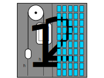

Show code cell content
import numpy as np
import matplotlib.pyplot as plt
plt.style.use('fivethirtyeight')
Definitions in Dynamics: kinematics and kinetics#
Dynamics (and Applied Mechanics II) is the study of motion and interacting objects. Dynamic models have two sets of deinitions
Kinematics: the study of the geometry of motion
Kinetics: the study of forces, work, and impulsive components
Kinematics: the geometry of motion#
Position#
Classical physics describes the position of an object using three independent coordinates e.g.
where \(\mathbf{r}_{P/O}\) is the position of point \(P\) with respect to the point of origin \(O\), \(x,~y,~z\) are magnitudes of distance along a Cartesian coordinate system and \(\hat{i},~\hat{j}\) and \(\hat{k}\) are unit vectors that describe three directions.
A unit vector is a unitless vector with a magnitude of 1. It only describes a direction. In a 3D coordinate system, you can descirbe the x-, y-, and z-axes using \(\hat{i},~\hat{j},~and~\hat{k}\).
In the figure below, the three unit vectors are plotted as blue arrows and a vector, \(\mathbf{v}=-1\hat{i}+1\hat{j}+1\hat{k}\) is plotted in red.
the values, \([-1,~1,~1]\) are the components of the vector \(\mathbf{v}\)
components depend upon the coordinate system.
the vector \(\mathbf{v}\) describes a magnitude, \(|\mathbf{v}| = \sqrt{1^2+1^2+1^2}=\sqrt{3}\) and direction, \(\hat{e} = -\frac{1}{\sqrt{3}}\hat{i}+\frac{1}{\sqrt{3}}\hat{j}+\frac{1}{\sqrt{3}}\hat{k}\)
unit vectors help to quantify the magnitude and direction, but the vector is independent of the unit vectors
ax = plt.figure().add_subplot(projection='3d')
ax.quiver([0, 0, 0], [0, 0, 0], [0, 0, 0],
[1, 0, 0], [0, 1, 0], [0, 0, 1], label = 'unit vectors')
ax.quiver(0, 0, 0,
-1, 1, 1, colors='red', label = 'v = -1i+1j+1k')
ax.set_xlim((-2,2))
ax.set_ylim((2,-2))
ax.set_zlim((-2,2))
ax.legend()
ax.set_xlabel('x-axis')
ax.set_ylabel('y-axis')
ax.set_zlabel('z-axis')
ax.set_title('Unit vectors for x-y-z fixed coordinate system');
Velocity#
The velocity of an object is the change in position per length of time.
Note: The notation \(\dot{x}\) and \(\ddot{x}\) is short-hand for writing out \(\frac{dx}{dt}\) and \(\frac{d^2x}{dt^2}\), respectively.
The definition of velocity depends upon the change in position of all three independent coordinates, where \(\frac{d}{dt}(x\hat{i})=\dot{x}\hat{i}\).
Example - velocity given position#
You can find velocity based upon postion, but you can only find changes in position with velocity. Consider tracking the motion of a car driving down a road using GPS. You determine its motion and create the position,
\(\mathbf{r} = x\hat{i} +y\hat{j}~miles\), where
\(x(t) = t^2 + 3~miles\)
\(y(t) = 3t - 1~miles\)
and \(t\) is measured in hours
To get the velocity, calculate \(\mathbf{v} = \dot{\mathbf{r}}\)
\(\mathbf{v} = (2t)\hat{i} +3 \hat{j}\)
Show code cell source
t = np.linspace(0, 6, 7)
x = t**2 + 3
y = 3*t -1
plt.plot(x,y,'o')
plt.quiver(x,y,2*t, 3)
plt.title('Position of car on road every hour'+
'\nvelocity shown as arrow')
plt.axis('equal')
plt.xlabel('x-position (m)')
plt.ylabel('y-position (m)');
Speed#
The speed of an object is the magnitude of the velocity,
\(|\mathbf{v}_{P/O}| = \sqrt{\mathbf{v}\cdot\mathbf{v}} = \sqrt{\dot{x}^2 + \dot{y}^2 + \dot{z}^2}\)
In the example above, the speed of the car, \(v\), is given by
\(v = |\mathbf{v}| = \sqrt{\dot{x}^2+\dot{y}^2} = \sqrt{4t^2 +9}\)
Acceleration#
The acceleration of an object is the change in velocity per length of time.
\(\mathbf{a}_{P/O} = \frac{d \mathbf{v}_{P/O} }{dt} = \ddot{x}\hat{i} + \ddot{y}\hat{j} + \ddot{z}\hat{k}\)
where \(\ddot{x}=\frac{d^2 x}{dt^2}\) and \(\mathbf{a}_{P/O}\) is the acceleration of point \(P\) with respect to the point of origin \(O\).
Rotation and Orientation#
The definitions of position, velocity, and acceleration all describe a single point, but dynamic engineering systems are composed of rigid bodies is needed to describe the position of an object.

In the figure above, the center of the block is located at \(r_{P/O}=x\hat{i}+y\hat{j}\) in both the left and right images, but the two locations are not the same. The orientation of the block is important for determining the position of all the material points.
In general, a rigid body has a pitch, yaw, and roll that describes its rotational orientation, as seen in the animation below. We will revisit 3D motion in Module_05. For now, we will limit our description of motion to planar motion.
Show code cell source
from IPython.display import YouTubeVideo
vid = YouTubeVideo("li7t--8UZms?loop=1")
display(vid)
Planar motion: angular velocity#
Planar motion means that an object’s motion is described using three components:
x-position
y-position
orientation (\(\theta\))
The x-y-positions describe a point (such as the center of mass) in the object and \(\theta\) describes its rotation. The change in angle over time is called angular velocity
angular velocity has a magnitude and direction, \(\mathbf{\omega} = \dot{\theta}\hat{k}\)
the derivative of angular velocity is angular acceleration, \(\mathbf{\alpha}=\frac{d\mathbf{\omega}}{dt} = \ddot{\theta}\hat{k}\)
Now, you can describe a planar object’s motion with
position, \(\mathbf{r}=x\hat{i}+y\hat{j}\), and orientation \(\theta\)
velocity, \(\mathbf{v}=\dot{x}\hat{i}+\dot{y}\hat{j}\), and angular velocity \(\mathbf{\omega}=\dot{\theta}\hat{k}\)
acceleration, \(\mathbf{r}=\ddot{x}\hat{i}+\ddot{y}\hat{j}\), and angular acceleration \(\mathbf{\alpha}=\ddot{\theta}\hat{k}\)
Kinetics - forces, work-energy, impulse-momentum#
Newton-Euler equations#
In this course, you will use the Newton-Euler equations to relate motion to applied forces and moments
\(\mathbf{F} = m\mathbf{a}\)
\(\mathbf{M} = I\mathbf{\alpha}\)
The Newton-Euler equations describe forces in terms of acceleration and angular acceleration. The \(m\) is the mass of the object and the \(I\) is the moment of inertia of the object. You can think of moment of inertia as a way to measure distribution of mass, its measured in terms of \([kg\cdot m^2]\), in SI units.
Example - changing a tire#
When you change a tire, you either need to engage the brakes or leave the tire in contact with the ground. If not, you can calculate how quickly the tire will accelerate for a an applied moment.
In this example, a \(m=10~kg\), tire with moment of inertia \(I =1~kg\cdot m^2\) is able to rotate freely. The tire iron has a 10-N force on both sides, each 0.1-m from the center of the tire.
\(\sum F_x = 0 + 0 = m\ddot{x}\)
\(\sum F_y = 10 - 10 = m\ddot{y}\)
\(\sum M = 0.1\cdot 10 + 0.1 \cdot 10 = I\ddot{\theta}\)
Both the acceleration components are \(\ddot{x} = \ddot{y} = 0~m/s\). The angular acceleration is \(\ddot{\theta}\hat{k} = \frac{2~N\cdot m}{1~kg-m^2} = 2~\frac{rad}{s^2}\hat{k}\).
Work-Energy equations#
Work is defined as a force acting through a distance and/or a moment acting over a given rotation, \(dW=F\cdot d\mathbf{r}+Md\theta\). When mechanical work is added to a dynamic system, the energy of the system has to change. If you ignore changes in temperature, then there are two possible conversions
kinetic energy, \(T = \frac{1}{2}mv^2 + \frac{1}{2}I\dot{\theta}^2\)
potential energy, \(V\)
The kinetic energy quantifies the speed and mass of an object. For a solid object, like the tire from the last example, this include the translational kinetic energy \(\frac{1}{2}mv^2\) and the rotational kinetic energy, \(\frac{1}{2}I\dot{\theta}^2\). The potential energy can describe work done by conservative forces, such as
springs, \(V_{spring} = \frac{1}{2}kx^2\), where x is distance the spring stretched and k is the spring stiffness
gravity near Earth surface, \(V_{gravity} = mgh\), where \(h\) is the change in height of the object
gravity general, \(V_{gravity} = \frac{GMm}{r}\), where \(G=6.674\times10^{11} \frac{m^3}{kg \cdot s^2}\), \(M\) is mass of Earth, and \(r\) is distance from Earth’s center
…
Potential energy is independent of velocity and the path an object takes. If you raise a 5-kg bowling ball 1 meter, it has \(V=mgh=(5~kg)(9.81~\frac{m}{s^2})(1~m) = 49~J\) of potential energy. It does not matter if it was raised slowly or quickly or if it reached the height on a vertical path or angled path.
The work-energy equation satisfies the first law of thermodynamics: energy can neither be created or destroyed
\(T_1 + V_1 + W_{1\rightarrow 2} = T_2+V_2\)
This equation states that the mechanical work, \(W_{1\rightarrow 2}\), will create a change in total energy of the system, \(T+V\). The subscripts \(1~and~2\) describe a starting and ending point.
Example - elevator motor selection#
You are an engineer asked to select an electric motor for a 1000-kg elevator. The elevator has a 1000-kg counterweight as shown below. What information do you need to select the motor?

First, consider the work done to go from 0-30 m.
\(T_1 + V_1 +W_{1\rightarrow 2} = T_2 + V_2\)
\(T_1 = T_2 = 0\) since the elevator and counterweight stop at 30 m and 0 m, respectively
\(V_1 = (1000~kg)(9.81~m/s^2)(30~m)\)
\(V_2 = (1000~kg)(9.81~m/s^2)(30~m)\)
This means, \(W_{1\rightarrow 2}=V_2-V_1=0~J\). How can this be?
The counterweight is there to balance the weight of the elevator, so no matter what height the elevator reaches, the work done to overcome gravity is \(0~J\). Does this mean you can move the elevator with a 0-N-m motor? not quite.
The motor might not need to overcome gravity, but if you want to reach the top floor in a certain amount of time, you need to add kinetic energy to the system. A 30-m building is 10 stories tall. You would want to know how fast the elevator needs to travel. Let’s estimate that it takes 20 seconds to go floor 1 to 10.
\(T_1 = 0\)
\(v_2 = \frac{30~m}{20~s} = 1.5~m/s\)
\(T_2 = \frac{1}{2}(1000~kg)(1.5~m/s)^2+\frac{1}{2}(1000~kg)(1.5~m/s)^2\)
Now, you have
\(W_{1\rightarrow 2}=T_2-T_1=2250~J=2250~N\cdot m\)
The work done to get the elevator to its cruising speed is 2.25 kJ. When you stop, you will have to remove 2.25 kJ using the motor or a brake. Now, how quickly should you start and stop? Standard practice for comfort is to accelerate elevators at \(1.5~m/s^2\).
So the time it takes to reach maximum speed is \(\Delta t = 1~s\). You should select a motor that creates \(\dot{W}_{1\rightarrow 2} = \frac{2250~J}{1~s} = 2.25~kW\) of power.
Impulse-momentum equations#
Newton first described the laws of motion in terms of momentum, \(\mathbf{p} = m\mathbf{v}\) and force. The second law was stated as the equation
\(F = d(m\mathbf{v})\)
The applied force, \(F\), will change the momentum, \(m\mathbf{v}\). The same equation is true for rotation of an object
\(M = d(\mathbf{h})\)
where \(\mathbf{h}\) is the angular momentum of an object. In planar systems, \(\mathbf{h} = I\dot{\theta}\hat{k}\).
An impulse is a force or moment applied over a period of time. When there is an impact or explosion, you can use the impulse-momentum equations as such
\(m\mathbf{v}_1 + \mathbf{F}dt = m\mathbf{v}_2\)
\(I\dot{\theta}_1 + \mathbf{M}dt = I\dot{\theta}_2\)
where \(\mathbf{F}dt\) is the linear impulse, \(\mathbf{M}dt\) is the moment-impulse, \(m\mathbf{v}\) is linear momentum, and \(I\dot{\theta}\) is angular momentum.
Example - hitting a golf ball#
When a golf ball is hit by a club, it goes from rest to 45 m/s (~100 mph) almost instantly. If you take the derivative of velocity to get acceleration, you have
\(a = \frac{45~m/s}{0~s} = \infty~m/s^2\)
which would mean that the applied force is 0.045~kg\(\cdot \infty~m/s^2=\infty~N\). Its just not helpful information, and in reality there must be some change in time between 0 and \(45~m/s\).
Instead, use the impulse-momentum equation to determine the impulse required to change the momentum of the golf ball
\(\mathbf{F}dt = m\mathbf{v}_2- m\mathbf{v}_1 = (0.045~kg)(45~m/s) = 2.02~\frac{kg\cdot m}{s} = 2.02~N\cdot s\)
Wrapping up#
In this notebook you defined:
Kinematics - the geometry of motion
position, \(\mathbf{r} = x\hat{i}+y\hat{j}+z\hat{k}\)
velocity, \(\mathbf{v} = \frac{d\mathbf{r}}{dt}\)
acceleration, \(\mathbf{a} = \frac{d\mathbf{a}}{dt}\)
angular velocity, \(\mathbf{\omega} = \dot{\theta}\hat{k}\) in planar motion
angular acceleration, \(\mathbf{\alpha} = \ddot{\theta}\hat{k}\) in planar motion
Kinetics - the study of forces, work-energy, and impulse-momentum
Newton-Euler equations: \(\mathbf{F} = m\mathbf{a}\) and \(\mathbf{M} = \frac{d}{dt}\mathbf{h}\)
work-energy equation: \(T_1+V_1 +W_{1\rightarrow 2} = T_2 + V_2\)
impulse-momentum equation: \(m\mathbf{v}_1 + Fdt = m\mathbf{v}_2\) and \(I\omega_1 + Mdt = I\omega_2\) _in planar motion
Every rigid-body dynamic problem is solved using these kinematic and kinetic equations. You will use a combination of algebra, geometry, and calculus to get final solutions, but the core engineering concepts in dynamics are kinematics and kinetics equations.